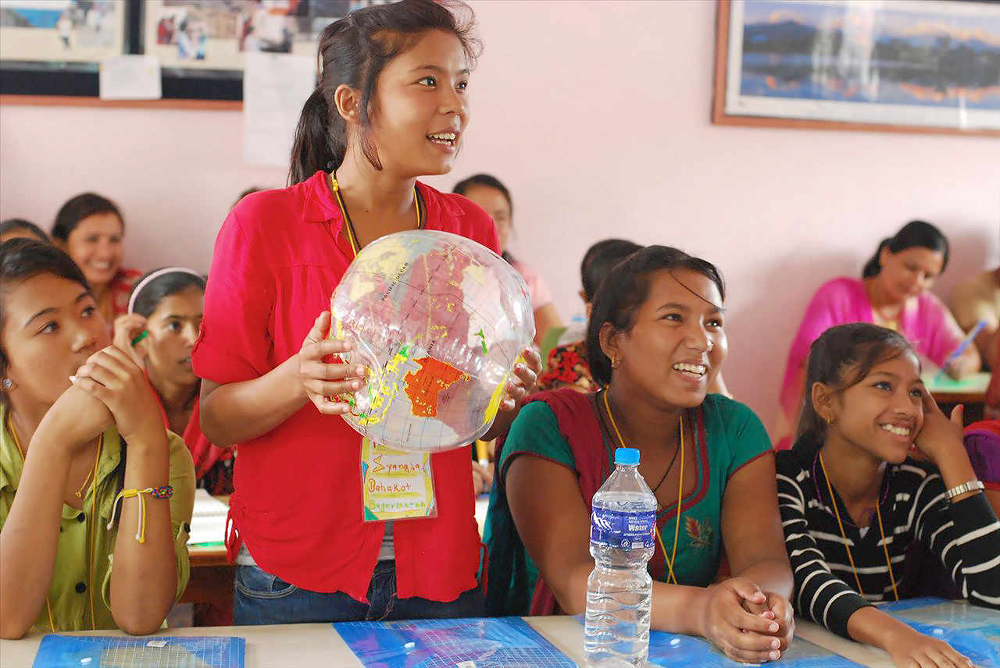
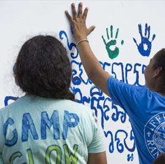
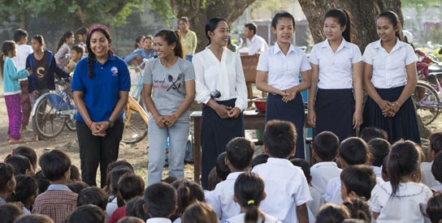

  <div class="wrap wrap--white">
    <section class="panel panel--b">
    {% include breadcrumbs.html %}
      <article class="panel__content panel__story">
        <p>
          <span>After a year of working in her community in Nepal, one thing stood out strongly for Peace Corps Volunteer Alexandra Clayton.</span> Though there were many sports and youth clubs in the villages, they were all run by boys. There was no place for girls to come together, develop leadership and communications skills, and learn about current issues facing women in Nepal. So she did something about it.
        </p>
        <p>
          Alexandra and several other Volunteers decided to host a Camp GLOW&mdash;Girls Leading Our World&mdash;and invited 36 Nepali high-school girls to learn about health, gender roles, business, financial management, and life skills. In addition, each Volunteer brought a Nepali counterpart to help run the five-day camp, facilitating group activities and helping with translation. Though GLOW camps were started in 1995 by Peace Corps Volunteers in Romania, this was Nepal's first girls' empowerment camp. And, for many of the campers, it was a well-deserved break from their cooking and cleaning duties at home.
        </p>

        

         <p>
          After the camp, the girls became leaders in their communities. They have spoken at schools, started their own girls' youth clubs, painted murals in their communities, and educated their communities on women's issues in Nepal. During those five days of camp, the Volunteers helped empower the girls to make changes in their communities that will last a lifetime.
        </p>
        <p>
          But they've only reached 36 of the 8.2 million young women in Nepal. Next year, Alexandra and her fellow Volunteers plan to host another Camp GLOW and bring back previous campers as counselors, as well as inspire other Peace Corps Volunteers in Nepal&mdash;and around the globe&mdash;to host more Camp GLOWs to reach more girls.
        </p>

        <p>
          With increased gender training, Peace Corps Volunteers like Alexandra will be able to make an even bigger, more sustainable difference in the lives of young women around the world.
        </p>

        <div class="tri-image">
          
          
          
        </div>

        <p style="text-align:center;">
          <a class="t-title--3 t--light t-link--no_underline" href="/workingwithcommunities.html">Pillar Two: Working Hand in Hand with Communities ></a>
        </p>
        {% include main_logos.html %}
      </article>
    </section>
  </div>
  <!-- end panel-2 -->
